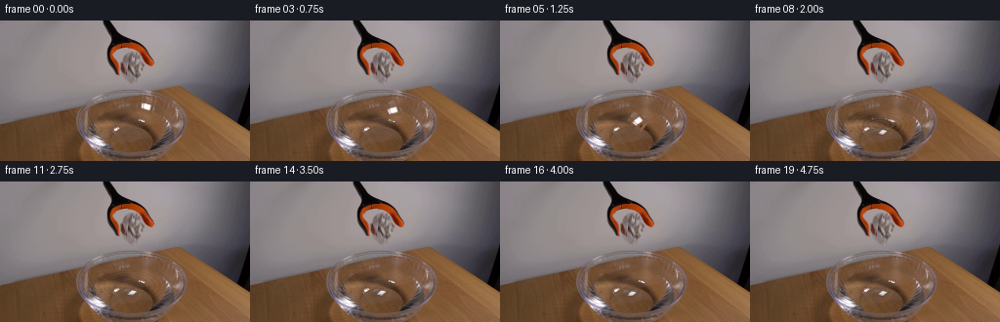
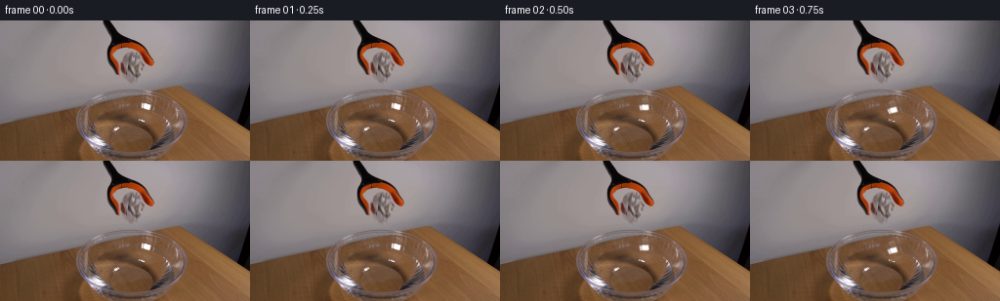
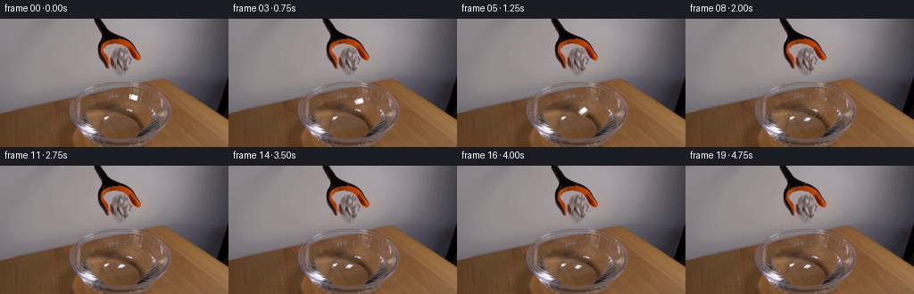
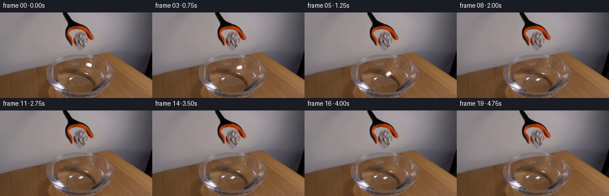
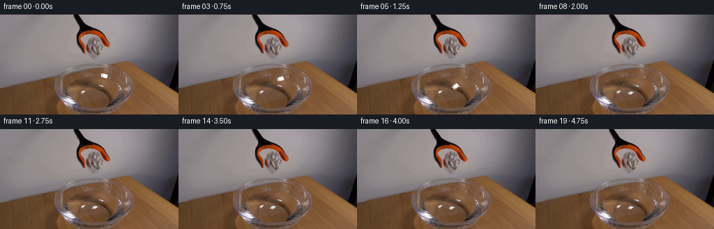

CODING AGENTS AS PIXEL WORLD MODELS
traex/DeepSeek-V4.1-Flash · 0133
点击播放 · 原生 RGB 像素
此结果可播放，但该运行尚未通过最终提交审核。页面展示不代表评测通过。
逐轮保存的候选
回放视频、检查图与代码变化。
每份候选均可单独播放。实际图片检查记录在下方工具轨迹中。
候选 01播放与检查图
点击播放 · 原生 RGB 像素


展开代码变化
--- 上一保存版本
+++ 本次保存版本
@@ -0,0 +1,261 @@
+from pathlib import Path
+
+import cv2
+import numpy as np
+from PIL import Image
+
+import artifact_io
+
+
+CASE_DIR = Path(__file__).resolve().parent
+WIDTH = 256
+HEIGHT = 144
+N_FRAMES = 20
+
+
+def smoothstep(edge0, edge1, x):
+ x = np.clip((x - edge0) / (edge1 - edge0), 0.0, 1.0)
+ return x * x * (3.0 - 2.0 * x)
+
+
+def paper_sprite(source):
+ """Extract the small crumpled-paper cluster and a clean background plate."""
+ x0, y0, x1, y1 = 139, 79, 161, 98
+ crop = source[y0:y1, x0:x1].copy()
+ f = crop.astype(np.float32)
+ value = f.max(axis=2)
+ chroma = f.max(axis=2) - f.min(axis=2)
+
+ # The paper is the neutral, bright cluster held between the dark jaws.
+ core = (value > 118.0) & (chroma < 70.0)
+ core &= (np.indices(core.shape)[1] > 2) & (np.indices(core.shape)[1] < 18)
+ core = core.astype(np.uint8) * 255
+ core = cv2.morphologyEx(core, cv2.MORPH_CLOSE, np.ones((3, 3), np.uint8))
+ core = cv2.dilate(core, np.ones((3, 3), np.uint8), iterations=1)
+
+ alpha = cv2.GaussianBlur(core.astype(np.float32) / 255.0, (3, 3), 0.65)
+ alpha = np.clip((alpha - 0.08) / 0.84, 0.0, 1.0)
+
+ # Use a slightly enlarged texture patch so rotation never samples its border.
+ sprite = crop.astype(np.float32)
+ sprite_alpha = alpha
+ pad = 3
+ sprite = cv2.copyMakeBorder(sprite, pad, pad, pad, pad, cv2.BORDER_REFLECT_101)
+ sprite_alpha = cv2.copyMakeBorder(
+ sprite_alpha, pad, pad, pad, pad, cv2.BORDER_CONSTANT, value=0
+ )
+
+ removal = np.zeros(source.shape[:2], np.uint8)
+ removal[y0:y1, x0:x1] = cv2.dilate(core, np.ones((5, 5), np.uint8))
+ background = cv2.inpaint(source, removal, 4, cv2.INPAINT_TELEA)
+ return sprite, sprite_alpha, background
+
+
+def transform_sprite(sprite, alpha, center, angle, scale_x=1.0, scale_y=1.0):
+ h, w = alpha.shape
+ scale = 1.0
+ m = cv2.getRotationMatrix2D((w * 0.5 - 0.5, h * 0.5 - 0.5), angle, scale)
+ m[0, 0] *= scale_x
+ m[0, 1] *= scale_x
+ m[1, 0] *= scale_y
+ m[1, 1] *= scale_y
+ m[0, 2] += center[0] - (w * 0.5 - 0.5)
+ m[1, 2] += center[1] - (h * 0.5 - 0.5)
+
+ rgb = cv2.warpAffine(
+ sprite,
+ m,
+ (WIDTH, HEIGHT),
+ flags=cv2.INTER_LINEAR,
+ borderMode=cv2.BORDER_CONSTANT,
+ borderValue=(0, 0, 0),
+ )
+ a = cv2.warpAffine(
+ alpha,
+ m,
+ (WIDTH, HEIGHT),
+ flags=cv2.INTER_LINEAR,
+ borderMode=cv2.BORDER_CONSTANT,
+ borderValue=0,
+ )
+ return rgb, np.clip(a, 0.0, 1.0)
+
+
+def add_soft_shadow(image, center, radius_x, radius_y, strength):
+ yy, xx = np.indices((HEIGHT, WIDTH), dtype=np.float32)
+ q = ((xx - center[0]) / radius_x) ** 2 + ((yy - center[1]) / radius_y) ** 2
+ shadow = np.exp(-2.5 * q) * strength
+ image *= (1.0 - shadow[..., None])
+ return image
+
+
+def add_water_ripples(image, elapsed, impact):
+ if elapsed <= 0:
+ return image
+
+ cx, cy = impact
+ yy, xx = np.indices((HEIGHT, WIDTH), dtype=np.float32)
+ dx = (xx - cx) / 1.12
+ dy = (yy - cy) / 0.54
+ radius = np.sqrt(dx * dx + dy * dy)
+ interior = (
+ ((xx - 132.0) / 49.0) ** 2 + ((yy - 109.0) / 31.0) ** 2 < 1.0
+ )
+ bowl_lip = (xx > 82.0) & (xx < 181.0) & (yy > 90.0) & (yy < 134.0)
+ interior &= bowl_lip
+
+ decay = np.exp(-0.82 * elapsed)
+ wave_number = 1.35
+ phase = wave_number * (radius - (3.0 + 17.0 * elapsed))
+ envelope = np.exp(-((radius - (4.0 + 18.0 * elapsed)) / 13.0) ** 2)
+ wave = np.sin(phase) * envelope * decay
+
+ # A restrained refraction shift makes the rings read as water, not paint.
+ shift = 1.25 * wave
+ sample_x = np.clip(
+ xx + shift * (xx - cx) / (radius + 1.0), 0, WIDTH - 1
+ ).astype(np.float32)
+ sample_y = np.clip(
+ yy + shift * (yy - cy) / (radius + 1.0), 0, HEIGHT - 1
+ ).astype(np.float32)
+ warped = cv2.remap(
+ image,
+ sample_x,
+ sample_y,
+ interpolation=cv2.INTER_LINEAR,
+ borderMode=cv2.BORDER_REFLECT_101,
+ )
+ mix = interior.astype(np.float32) * np.clip(0.28 + 0.55 * decay, 0.0, 0.68)
+ image = image * (1.0 - mix[..., None]) + warped * mix[..., None]
+
+ highlight = (10.5 * wave + 4.0 * np.exp(-1.6 * elapsed) * envelope)
+ highlight *= interior.astype(np.float32)
+ image += highlight[..., None] * np.array([0.78, 0.88, 1.0], np.float32)
+ return np.clip(image, 0.0, 255.0)
+
+
+def add_splash(image, age):
+ """A few short-lived droplets and a small crown around the contact point."""
+ if age < 0.0 or age > 1.15:
+ return image
+
+ overlay = image.copy()
+ cx, cy = 132.0, 106.0
+ spread = 2.0 + 10.0 * min(age, 0.75)
+ fade = max(0.0, 1.0 - age / 1.15)
+ if fade <= 0:
+ return image
+
+ for side in (-1.0, 1.0):
+ x = int(round(cx + side * spread))
+ y = int(round(cy - 1.0 - 5.5 * np.sin(min(age, 0.7) * np.pi)))
+ cv2.circle(
+ overlay,
+ (x, y),
+ max(1, int(round(1.2 * fade))),
+ (208, 219, 224),
+ -1,
+ cv2.LINE_AA,
+ )
+ cv2.ellipse(
+ overlay,
+ (int(cx), int(cy + 1)),
+ (int(round(7 + 12 * age)), int(round(2 + 3 * age))),
+ 0,
+ 12,
+ 168,
+ (170, 188, 194),
+ 1,
+ cv2.LINE_AA,
+ )
+ return image * (1.0 - 0.30 * fade) + overlay * (0.30 * fade)
+
+
+def release_state(frame_index):
+ """Return paper center, angle, vertical scale, and impact age."""
+ if frame_index < 2:
+ return None
+
+ # The small gap on release, then acceleration under gravity.
+ path = [
+ (147.8, 89.0, 18.0, 1.00),
+ (146.2, 91.8, 31.0, 1.00),
+ (144.0, 96.8, 43.0, 0.98),
+ (140.9, 102.3, 55.0, 0.94),
+ (137.4, 106.2, 67.0, 0.84),
+ ]
+ release_index = frame_index - 2
+ if release_index < len(path):
+ x, y, angle, sy = path[release_index]
+ return (x, y), angle, sy, -1.0
+
+ impact_time = (len(path) + 1) / 4.0
+ elapsed = frame_index / 4.0 - impact_time
+ bob = 0.55 * np.sin(9.5 * elapsed + 0.4) * np.exp(-0.7 * elapsed)
+ x = 135.2 + 0.65 * np.sin(2.4 * elapsed)
+ y = 108.3 + bob
+ angle = 77.0 + 2.0 * np.sin(3.0 * elapsed)
+ sy = 0.48 + 0.025 * np.sin(7.0 * elapsed)
+ return (x, y), angle, sy, max(0.0, elapsed)
+
+
+def main():
+ source = np.asarray(Image.open(CASE_DIR / "first_frame.png").convert("RGB"), np.uint8)
+ assert source.shape == (HEIGHT, WIDTH, 3)
+
+ sprite, sprite_alpha, background = paper_sprite(source)
+ frames = []
+
+ for index in range(N_FRAMES):
+ if index == 0:
+ frames.append(source.copy())
+ continue
+
+ state = release_state(index)
+ if state is None:
+ frames.append(source.copy())
+ continue
+
+ center, angle, scale_y, impact_age = state
+ image = background.astype(np.float32)
+
+ # A soft contact shadow is visible on the water only while falling.
+ if impact_age < 0:
+ progress = np.clip((center[1] - 88.0) / 20.0, 0.0, 1.0)
+ image = add_soft_shadow(
+ image,
+ (center[0] - 2.5, 107.0),
+ 12.0 + 3.0 * progress,
+ 3.3 + 0.9 * progress,
+ 0.07 + 0.10 * progress,
+ )
+ else:
+ image = add_water_ripples(image, impact_age, (132.0, 106.5))
+ image = add_splash(image, impact_age)
+
+ rgb, alpha = transform_sprite(
+ sprite,
+ sprite_alpha,
+ center,
+ angle,
+ scale_x=1.0,
+ scale_y=scale_y,
+ )
+
+ # Once wet, darken and cool the lower half of the paper slightly.
+ if impact_age >= 0:
+ yy = np.indices((HEIGHT, WIDTH))[0]
+ wet = np.clip((yy - (center[1] - 1.0)) / 6.0, 0.0, 1.0)
+ rgb *= (1.0 - 0.13 * wet[..., None])
+ rgb += np.array([-1.5, 1.0, 3.5], np.float32) * wet[..., None]
+
+ a = alpha[..., None]
+ image = image * (1.0 - a) + rgb * a
+ frames.append(np.clip(image + 0.5, 0.0, 255.0).astype(np.uint8))
+
+ frames[0] = source.copy()
+ artifact_io.save(np.stack(frames), CASE_DIR)
+
+
+if __name__ == "__main__":
+ main()
候选 02播放与检查图
点击播放 · 原生 RGB 像素

展开代码变化
--- 上一保存版本
+++ 本次保存版本
@@ -20,15 +20,15 @@
def paper_sprite(source):
"""Extract the small crumpled-paper cluster and a clean background plate."""
- x0, y0, x1, y1 = 139, 79, 161, 98
+ x0, y0, x1, y1 = 143, 82, 157, 94
crop = source[y0:y1, x0:x1].copy()
f = crop.astype(np.float32)
value = f.max(axis=2)
chroma = f.max(axis=2) - f.min(axis=2)
# The paper is the neutral, bright cluster held between the dark jaws.
- core = (value > 118.0) & (chroma < 70.0)
- core &= (np.indices(core.shape)[1] > 2) & (np.indices(core.shape)[1] < 18)
+ core = (value > 132.0) & (chroma < 78.0)
+ core &= (np.indices(core.shape)[1] > 0) & (np.indices(core.shape)[1] < 13)
core = core.astype(np.uint8) * 255
core = cv2.morphologyEx(core, cv2.MORPH_CLOSE, np.ones((3, 3), np.uint8))
core = cv2.dilate(core, np.ones((3, 3), np.uint8), iterations=1)
@@ -39,7 +39,7 @@
# Use a slightly enlarged texture patch so rotation never samples its border.
sprite = crop.astype(np.float32)
sprite_alpha = alpha
- pad = 3
+ pad = 4
sprite = cv2.copyMakeBorder(sprite, pad, pad, pad, pad, cv2.BORDER_REFLECT_101)
sprite_alpha = cv2.copyMakeBorder(
sprite_alpha, pad, pad, pad, pad, cv2.BORDER_CONSTANT, value=0
候选 03播放与检查图
点击播放 · 原生 RGB 像素

展开代码变化
--- 上一保存版本
+++ 本次保存版本
@@ -20,7 +20,7 @@
def paper_sprite(source):
"""Extract the small crumpled-paper cluster and a clean background plate."""
- x0, y0, x1, y1 = 143, 82, 157, 94
+ x0, y0, x1, y1 = 143, 83, 157, 93
crop = source[y0:y1, x0:x1].copy()
f = crop.astype(np.float32)
value = f.max(axis=2)
@@ -31,7 +31,7 @@
core &= (np.indices(core.shape)[1] > 0) & (np.indices(core.shape)[1] < 13)
core = core.astype(np.uint8) * 255
core = cv2.morphologyEx(core, cv2.MORPH_CLOSE, np.ones((3, 3), np.uint8))
- core = cv2.dilate(core, np.ones((3, 3), np.uint8), iterations=1)
+ core = cv2.dilate(core, np.ones((2, 2), np.uint8), iterations=1)
alpha = cv2.GaussianBlur(core.astype(np.float32) / 255.0, (3, 3), 0.65)
alpha = np.clip((alpha - 0.08) / 0.84, 0.0, 1.0)
候选 04播放与检查图
点击播放 · 原生 RGB 像素

展开代码变化
--- 上一保存版本
+++ 本次保存版本
@@ -104,11 +104,14 @@
bowl_lip = (xx > 82.0) & (xx < 181.0) & (yy > 90.0) & (yy < 134.0)
interior &= bowl_lip
- decay = np.exp(-0.82 * elapsed)
- wave_number = 1.35
- phase = wave_number * (radius - (3.0 + 17.0 * elapsed))
- envelope = np.exp(-((radius - (4.0 + 18.0 * elapsed)) / 13.0) ** 2)
+ decay = np.exp(-1.12 * elapsed)
+ wave_number = 1.55
+ phase = wave_number * (radius - (2.0 + 15.0 * elapsed))
+ envelope = np.exp(-((radius - (3.0 + 16.0 * elapsed)) / 9.5) ** 2)
wave = np.sin(phase) * envelope * decay
+ wave += 0.24 * np.sin(1.08 * phase + 1.2) * np.exp(
+ -((radius - (1.0 + 23.0 * elapsed)) / 15.0) ** 2
+ ) * decay
# A restrained refraction shift makes the rings read as water, not paint.
shift = 1.25 * wave
@@ -125,10 +128,10 @@
interpolation=cv2.INTER_LINEAR,
borderMode=cv2.BORDER_REFLECT_101,
)
- mix = interior.astype(np.float32) * np.clip(0.28 + 0.55 * decay, 0.0, 0.68)
+ mix = interior.astype(np.float32) * np.clip(0.24 + 0.48 * decay, 0.0, 0.58)
image = image * (1.0 - mix[..., None]) + warped * mix[..., None]
- highlight = (10.5 * wave + 4.0 * np.exp(-1.6 * elapsed) * envelope)
+ highlight = (7.2 * wave + 3.0 * np.exp(-1.6 * elapsed) * envelope)
highlight *= interior.astype(np.float32)
image += highlight[..., None] * np.array([0.78, 0.88, 1.0], np.float32)
return np.clip(image, 0.0, 255.0)
可观测工具轨迹
实际执行的命令与返回图片。
命令 1exit 0
/bin/bash -c "pwd && rg --files -g 'prompt.txt' -g 'GENERATION_RULES.md' -g 'first_frame.png' -g '"'!*.mp4'"'"
命令 2exit 0
/bin/bash -c "sed -n '1,240p' prompt.txt"
命令 3exit 0
/bin/bash -c "sed -n '1,280p' GENERATION_RULES.md"
命令 4exit 0
/bin/bash -c 'ls -la && file first_frame.png 2>/dev/null || true && git status --short'
命令 5exit 0
/bin/bash -c "sed -n '1,260p' artifact_io.py"
命令 6exit 0
/bin/bash -c "sed -n '1,240p' player_template.html"
命令 7exit 0
/bin/bash -c "python3 - <<'PY'
from PIL import Image
import numpy as np
im=Image.open('first_frame.png').convert('RGB')
a=np.array(im)
print(im.size, a.shape, a.dtype)
print('min',a.min((0,1)),'max',a.max((0,1)),'mean',a.mean((0,1)))
# most common colors
u,c=np.unique(a.reshape(-1,3),axis=0,return_counts=True)
for i in np.argsort(c)[-20:][::-1]: print(tuple(u[i]), int(c[i]))
PY"命令 8exit 0
/bin/bash -c "python3 - <<'PY'
from PIL import Image
import numpy as np
im=np.array(Image.open('first_frame.png').convert('RGB')).astype(float)
r,g,b=im.transpose(2,0,1)
mx=im.max(2); mn=im.min(2); sat=(mx-mn)/(mx+1e-6); val=mx/255
# masks
orange=(r>90)&(r>g*1.35)&(g>=b*0.8)&(sat>.35)&(val>.25)
dark=(mx<65)
bright=(mx>210)
blue=(b>r*1.12)&(b>g*1.03)&(sat>.12)
green=(g>r*1.12)&(g>b*1.05)&(sat>.15)
for name,m in [('orange',orange),('dark',dark),('bright',bright),('blue',blue),('green',green)]:
ys,xs=np.where(m)
print(name,'count',len(xs),'bbox', (xs.min(),ys.min(),xs.max(),ys.max()) if len(xs) else None)
# components using scipy
from scipy.ndimage import label
lab,n=label(m)
comps=[]
for i in range(1,n+1):
yy,xx=np.where(lab==i)
if len(xx)>=15: comps.append((len(xx),xx.min(),yy.min(),xx.max(),yy.max()))
print(sorted(comps,reverse=True)[:10])
PY"命令 9exit 0
/bin/bash -c "python3 - <<'PY'
from PIL import Image
import numpy as np
from sklearn.cluster import MiniBatchKMeans
im=np.array(Image.open('first_frame.png').convert('RGB'))
a=im.reshape(-1,3)
km=MiniBatchKMeans(n_clusters=12,random_state=0,n_init=5,batch_size=4096).fit(a)
lab=km.labels_.reshape(144,256)
for i,c in enumerate(km.cluster_centers_):
print(i, tuple(np.round(c).astype(int)), int((lab==i).sum()))
# map 2x2 blocks; char by cluster rank order brightness/hue
# chars selectable by center
chars='0123456789AB'
for y in range(0,144,2):
row=''
for x in range(0,256,2):
vals=lab[y:y+2,x:x+2].ravel(); k=np.bincount(vals,minlength=12).argmax(); row+=chars[k]
print(row)
PY"命令 10exit 0
/bin/bash -c "python3 - <<'PY'
from PIL import Image
import numpy as np
im=np.array(Image.open('first_frame.png').convert('RGB')).astype(float)
# downsample 2x2 average, grayscale + hue category
g=(im@np.array([.299,.587,.114]))/255
chars=' .,:;irsXA253hMHGS#9B&@'
for y in range(0,144,2):
row=''
for x in range(0,256,2):
v=g[y:y+2,x:x+2].mean()
row+=chars[min(len(chars)-1,int(v*(len(chars)-1)))]
print(row)
PY"命令 11exit 0
/bin/bash -c "python3 - <<'PY'
from PIL import Image
import numpy as np
im=np.array(Image.open('first_frame.png').convert('RGB'))
for y in [0,8,16,24,32,40,48,56,64,72,80,88,96,104,112,120,128,136,143]:
print('y',y)
for x in range(0,256,16): print(f'{x:3}:{tuple(im[y,x])}',end=' ')
print()
PY"命令 12exit 0
/bin/bash -c "python3 - <<'PY'
from PIL import Image
import numpy as np
im=np.array(Image.open('first_frame.png').convert('RGB')).astype(float)
r,g,b=im.transpose(2,0,1); mx=im.max(2); mn=im.min(2); sat=(mx-mn)/(mx+1e-6)
# classify chars
# W wall gray, B wood brown, O orange, K dark, P pale paper, . mid gray
ch=np.full((144,256),'.',dtype='<U1')
ch[(mx<55)]='K'
ch[(r>g*1.5)&(g>=b*.75)&(sat>.4)&(r>75)]='O'
ch[(r>g*1.25)&(g>b*1.08)&(r>70)]='B'
ch[(mx>175)&(sat<.18)]='P'
ch[(mx>205)]='W'
# edge via sobel?
from scipy.ndimage import sobel, gaussian_filter
gr=gaussian_filter(im.mean(2),1)
e=np.hypot(sobel(gr,0),sobel(gr,1))
# print crop every 1 x 2y
for y in range(75,144,1):
row=''
for x in range(70,186,1):
c=ch[y,x]
if e[y,x]>55: c='#'
row+=c
print(f'{y:03} '+row)
PY"命令 13exit 0
/bin/bash -c "python3 - <<'PY'
from PIL import Image
import numpy as np
from scipy.ndimage import label, binary_opening, binary_closing
im=np.array(Image.open('first_frame.png').convert('RGB'))
hsv=np.array(Image.open('first_frame.png').convert('HSV')).astype(float)
h,s,v=hsv.transpose(2,0,1)
for name,m in [
('orange high sat',(h>5)&(h<25)&(s>140)&(v>70)),
('orange mid',(h>=8)&(h<30)&(s>90)&(v>50)),
('red/dark orange',(h<8)&(s>100)&(v>35)),
('paper white',(v>165)&(s<55)),
('water blue',(h>80)&(h<130)&(s>20)&(v>40)),
('black',(v<45)),
]:
m=binary_opening(m,iterations=1)
lab,n=label(m)
comps=[]
for i in range(1,n+1):
yy,xx=np.where(lab==i)
if len(xx)>=8: comps.append((len(xx),xx.min(),yy.min(),xx.max(),yy.max(),round(xx.mean(),1),round(yy.mean(),1)))
print('\\n',name,'total',m.sum(),'components',sorted(comps,reverse=True)[:20])
PY"命令 14exit 0
/bin/bash -c "python3 - <<'PY'
from PIL import Image
import numpy as np
im=np.array(Image.open('first_frame.png').convert('RGB')).astype(float)
r,g,b=im.transpose(2,0,1); mx=im.max(2); mn=im.min(2); sat=(mx-mn)/(mx+1e-6)
# W whiteish bright, O orange, K black, b brown, g grey, . wall
for y in range(0,76):
row=''
for x in range(80,190):
R,G,B=r[y,x],g[y,x],b[y,x]; M=mx[y,x]; S=sat[y,x]
if M>195 and S<.25: c='W'
elif M>165 and S<.14: c='w'
elif R>G*1.5 and G>B*.8 and S>.35 and R>70: c='O'
elif R>G*1.2 and G>B*1.05 and R>55: c='b'
elif M<42: c='K'
elif M<75: c='k'
elif M<110: c='g'
elif M<140: c='d'
else: c='.'
row+=c
print(f'{y:03} {row}')
PY"命令 15exit 0
/bin/bash -c "python3 - <<'PY'
from PIL import Image
import numpy as np
im=np.array(Image.open('first_frame.png').convert('RGB')).astype(float)
g=(im@np.array([.299,.587,.114]))
chars=' .:-=+*#%@'
# crop 80:180,0:100, one char pixel, stretch gray range 0:200
for y in range(0,100):
row=''
for x in range(80,180):
v=g[y,x]
row+=chars[min(9,int(v/200*10))]
print(f'{y:03} {row}')
PY"命令 16exit 0
/bin/bash -c "python3 - <<'PY'
from PIL import Image
import numpy as np
im=np.array(Image.open('first_frame.png').convert('RGB'))
# Print coords where dark orange is strong in top region 20:60,100:165
r,g,b=im.transpose(2,0,1).astype(int)
m=(r>110)&(r>g*1.8)&(g>b*.9)&(g<75)
for y in range(18,61):
xs=np.where(m[y,95:170])[0]+95
if len(xs): print(y, xs.min(), xs.max(), len(xs), [(x,tuple(im[y,x])) for x in xs[::max(1,len(xs)//8)]])
PY"命令 17exit 0
/bin/bash -c "python3 - <<'PY'
from PIL import Image
import numpy as np
from scipy.ndimage import binary_fill_holes, binary_closing, binary_dilation, binary_erosion
im=np.array(Image.open('first_frame.png').convert('RGB'))
hsv=np.array(Image.open('first_frame.png').convert('HSV')).astype(float);h,s,v=hsv.transpose(2,0,1)
# gray gripper mask in top region: mostly low saturation, v 60..130 around shape
r,g,b=im.transpose(2,0,1).astype(float); mx=im.max(2);mn=im.min(2);sat=(mx-mn)/(mx+1e-6)
m=(np.indices(mx.shape)[0]<75)&(sat<.13)&(mx<145)&(mx>40)
# restrict center
m[:,:80]=0;m[:,190:]=0
# orange part etc
mo=(h<30)&(s>80)&(v>40)
# combine region
m=m|mo
m=binary_closing(m,iterations=2);m=binary_fill_holes(m)
# components
from scipy.ndimage import label
lab,n=label(m)
for i in range(1,n+1):
yy,xx=np.where(lab==i)
if len(xx)>30: print(len(xx),xx.min(),yy.min(),xx.max(),yy.max())
# print boundaries each row
for y in range(0,60,2):
xs=np.where(m[y])[0]
if len(xs): print(y,xs.min(),xs.max(),len(xs))
PY"命令 18exit 0
/bin/bash -c "python3 - <<'PY'
from PIL import Image
import numpy as np
im=np.array(Image.open('first_frame.png').convert('RGB')).astype(float)
r,g,b=im.transpose(2,0,1); mx=im.max(2);mn=im.min(2);sat=(mx-mn)/(mx+1e-6)
# print exact 1px symbols for top gripper
for y in range(0,70):
row=''
for x in range(95,175):
R,G,B=r[y,x],g[y,x],b[y,x]; M=mx[y,x]; S=sat[y,x]
if R>G*1.5 and G>B*.8 and S>.35 and R>70: c='O'
elif R>G*1.3 and G>B*1.0 and R>50: c='o'
elif M<20: c='@'
elif M<40: c='K'
elif M<60: c='k'
elif M<85: c='g'
elif M<110: c='d'
elif M<135: c='s'
elif M<155: c='l'
elif M<175: c='L'
elif S<.12: c='w'
elif M>195: c='W'
elif M>175: c='H'
else: c='.'
row+=c
print(f'{y:03} {row}')
PY"命令 19exit 0
/bin/bash -c "python3 - <<'PY'
from PIL import Image
import numpy as np
im=np.array(Image.open('first_frame.png').convert('RGB')).astype(float)
# color map characters for crop bowl 75:195 x 70:144, 1px
r,g,b=im.transpose(2,0,1); mx=im.max(2); mn=im.min(2); sat=(mx-mn)/(mx+1e-6)
# use clusters manually by hue/value
for y in range(70,144):
row=''
for x in range(70,196):
R,G,B=r[y,x],g[y,x],b[y,x]; M=mx[y,x]; S=sat[y,x]
if M<25: c='@'
elif R>G*1.5 and G>B*.75 and S>.45 and R>85: c='O'
elif R>G*1.35 and G>B*.8 and S>.3 and R>65: c='o'
elif R>G*1.18 and G>B*1.04 and R>70: c='b'
elif S<.08 and M>185: c='W'
elif S<.12 and M>160: c='P'
elif S<.10 and M>130: c='p'
elif M<45: c='K'
elif M<65: c='k'
elif M<85: c='g'
elif M<105: c='d'
elif M<125: c='s'
elif M<145: c='l'
elif M<165: c='L'
elif M<185: c='H'
else: c='.'
row+=c
print(f'{y:03} {row}')
PY"命令 20exit 0
/bin/bash -c "python3 - <<'PY'
from PIL import Image
import numpy as np
from scipy.ndimage import sobel,gaussian_filter
im=np.array(Image.open('first_frame.png').convert('RGB')).astype(float)
g=gaussian_filter(im.mean(2),.7); e=np.hypot(sobel(g,0),sobel(g,1))
chars=' .:-=+*#%@'
for y in range(80,144):
row=''
for x in range(100,176):
row+=chars[min(9,int(e[y,x]/70*10))]
print(f'{y:03} {row}')
PY"命令 21exit 0
/bin/bash -c "python3 - <<'PY'
from PIL import Image
import numpy as np
im=np.array(Image.open('first_frame.png').convert('RGB')).astype(float)
# print all center pixels where bright white blob (paper) around x 85-175 y 80-140
for y in range(82,140):
xs=[]
for x in range(80,180):
R,G,B=im[y,x]
if R>150 and G>145 and B>145 and abs(R-G)<25 and abs(G-B)<25:
xs.append(x)
if xs: print(y,xs[0],xs[-1],len(xs))
PY"命令 22exit 0
/bin/bash -c "python3 - <<'PY'
from PIL import Image
import numpy as np
im=np.array(Image.open('first_frame.png').convert('RGB')).astype(float)
# Print 16x crop as nearest upscaled and maybe save for numeric stats only? inspect no visual tool; use color chars
# Find strongest non-background hue and save crop color index map
for y in range(95,144):
row=''
for x in range(100,165):
R,G,B=im[y,x]
if R>170 and G>165 and B>165: c='W'
elif R>150 and G>145 and B>145: c='P'
elif R>G*1.3 and R>B*1.15: c='O'
elif B>R*1.05 and B>G*.98: c='B'
elif max(R,G,B)<45: c='K'
elif max(R,G,B)<70: c='k'
elif max(R,G,B)<95: c='d'
elif max(R,G,B)<120: c='g'
elif max(R,G,B)<145: c='s'
elif max(R,G,B)<170: c='l'
else: c='.'
row+=c
print(f'{y:03} {row}')
PY"命令 23exit 0
/bin/bash -c "python3 - <<'PY'
from PIL import Image
import numpy as np
im=np.array(Image.open('first_frame.png').convert('RGB'))
for y in range(82,100):
print(y, [(x,tuple(im[y,x])) for x in range(138,160)])
PY"命令 24exit 0
/bin/bash -c "python3 - <<'PY'
from PIL import Image
import numpy as np
im=np.array(Image.open('first_frame.png').convert('RGB')).astype(float)
# print mean and color around central x for rows 70..100; locate bowl rim from dark/edge
for y in range(65,115):
# local gradient
row=im[y]
dx=np.abs(np.diff(row.mean(1)))
inds=np.argsort(dx[70:190])[-8:]+70
print(y, sorted([(int(i),round(dx[i],1)) for i in inds], key=lambda z:z[0]))
PY"命令 25exit 0
/bin/bash -c "python3 - <<'PY'
from PIL import Image
import numpy as np
im=np.array(Image.open('first_frame.png').convert('RGB')).astype(float)
for y in range(80,144):
# columns dark (<50 brightness) in central x 110-180
xs=np.where(im[y,90:195].mean(1)<65)[0]+90
if len(xs):
# groups
groups=[]
st=pr=xs[0]
for x in xs[1:]:
if x>pr+1: groups.append((st,pr));st=x
pr=x
groups.append((st,pr))
print(y,groups)
PY"命令 26exit 0
/bin/bash -c "python3 - <<'PY'
from PIL import Image
import numpy as np
im=np.array(Image.open('first_frame.png').convert('RGB')).astype(float)
r,g,b=im.transpose(2,0,1)
# print dominant dark line points x by y around central 130-170
for y in range(84,134):
vals=[]
for x in range(125,170):
R,G,B=r[y,x],g[y,x],b[y,x]
if R<100 and G<60 and B<40: vals.append(x)
if vals: print(y,min(vals),max(vals),len(vals))
PY"命令 27exit 0
/bin/bash -c "python3 - <<'PY'
from PIL import Image
import numpy as np
im=np.array(Image.open('first_frame.png').convert('RGB')).astype(float)
# center 128,? test reflection symmetry around bowl
for cx in [128,129,130,131,132,133,134,135,136]:
d=[]
for y in range(75,144,3):
for x in range(90,180,2):
if cx-(x-cx)>=0:
d.append(np.abs(im[y,x]-im[y,2*cx-x]).mean())
print(cx,round(np.mean(d),2))
PY"命令 28exit 0
/bin/bash -c "python3 - <<'PY'
from PIL import Image
import numpy as np
from scipy.ndimage import sobel,gaussian_filter
im=np.array(Image.open('first_frame.png').convert('RGB')).astype(float)
g=gaussian_filter(im.mean(2),1)
e=np.hypot(sobel(g,0),sobel(g,1))
# print edge ascii at 2x2 downsample crop bowl
chars=' .:-=+*#%@'
for y in range(65,144,2):
row=''
for x in range(70,195,2):
v=e[y:y+2,x:x+2].max()
row+=chars[min(9,int(v/110*10))]
print(f'{y:03} {row}')
PY"命令 29exit 0
/bin/bash -c "python3 - <<'PY'
from PIL import Image
import numpy as np
im=np.array(Image.open('first_frame.png').convert('RGB'))
# use row y=90 print R,G,B every 5 in 120-150
for y in [83,84,85,86,87,88,89,90,91,92,93,94,95,96]:
print('y',y,[(x,tuple(im[y,x])) for x in range(120,151,2)])
PY"命令 30exit 0
/bin/bash -c "python3 - <<'PY'
try:
import cv2; print('cv2',cv2.__version__)
except Exception as e: print('no cv2',e)
try:
import scipy; print('scipy',scipy.__version__)
except Exception as e: print('no scipy',e)
PY"命令 31exit 0
/bin/bash -c "find .tmp -maxdepth 2 -type f -printf '%p %s\\n' | head -50"
命令 32exit 0
/bin/bash -c "python3 - <<'PY'
from PIL import Image
import numpy as np
im=np.array(Image.open('first_frame.png').convert('RGB')).astype(float)
# print edge strength low threshold crop in symbols for object x 105-180 y 75-135 at 2x2
from scipy.ndimage import gaussian_filter,sobel
g=gaussian_filter(im.mean(2),.8);e=np.hypot(sobel(g,0),sobel(g,1))
chars=' .:-=+*#%@'
for y in range(74,136):
row=''
for x in range(105,181):
v=e[y,x]
row+=chars[min(9,int(v/45*10))]
print(f'{y:03} {row}')
PY"命令 33exit 0
/bin/bash -c "python3 - <<'PY'
from PIL import Image
import numpy as np
im=np.array(Image.open('first_frame.png').convert('RGB')).astype(float)
# test local color variance around bowl; show line integral boundary based on dark ring radial
# estimate bowl ellipse from edge points via candidate x,y distribution manually: score ellipse candidates using mean gradient inward? simple print edge coordinates low threshold in bowl region
from scipy.ndimage import gaussian_filter,sobel
g=gaussian_filter(im.mean(2),1);e=np.hypot(sobel(g,0),sobel(g,1))
# threshold and component
from scipy.ndimage import label
m=e>80;m[:75]=0;m[:,:70]=0;m[:,200:]=0
lab,n=label(m)
cs=[]
for i in range(1,n+1):
yy,xx=np.where(lab==i)
if len(xx)>5:cs.append((len(xx),xx.min(),yy.min(),xx.max(),yy.max()))
print(sorted(cs,reverse=True)[:20])
PY"命令 34exit 0
/bin/bash -c "python3 - <<'PY'
from PIL import Image
import numpy as np
im=np.array(Image.open('first_frame.png').convert('RGB')).astype(float)
# print color difference / locations bright paper component with flood fill
from scipy.ndimage import label
m=(im.mean(2)>170)&(im.max(2)-im.min(2)<50)
lab,n=label(m)
for i in range(1,n+1):
yy,xx=np.where(lab==i)
if len(xx)>20: print(len(xx),xx.min(),yy.min(),xx.max(),yy.max(),xx.mean(),yy.mean())
PY"命令 35exit 0
/bin/bash -c "python3 - <<'PY'
from PIL import Image
import numpy as np
im=np.array(Image.open('first_frame.png').convert('RGB')).astype(float)
# Object near top? inspect pixels / connected dark gray shape bbox 109..157 y18..65. Print exact mask if sat low dark
mx=im.max(2);mn=im.min(2);sat=(mx-mn)/(mx+1e-6)
for y in range(15,70):
row=''
for x in range(100,165):
M=mx[y,x];S=sat[y,x];R,G,B=im[y,x]
if R>G*1.6 and S>.4: c='O'
elif M<25:c='@'
elif M<45:c='K'
elif M<70:c='k'
elif S<.13 and M<125:c='#'
elif M<100:c='g'
elif M<130:c='d'
else:c='.'
row+=c
print(f'{y:02} {row}')
PY"命令 36exit 0
/bin/bash -c "python3 - <<'PY'
from PIL import Image
import numpy as np
im=np.array(Image.open('first_frame.png').convert('RGB')).astype(float)
r,g,b=im.transpose(2,0,1);mx=im.max(2);mn=im.min(2);sat=(mx-mn)/(mx+1e-6)
# print broad symbol map for lower half 0:256 x 65:144 downsample 2x2, emphasizing shapes
chars=' .:-=+*#%@'
# grayscale
G=im.mean(2)
for y in range(64,144,2):
row=''
for x in range(0,256,2):
v=G[y:y+2,x:x+2].mean(); row+=chars[min(9,int(v/210*10))]
print(f'{y:03} {row}')
PY"命令 37exit 1
/bin/bash -c 'python3 generate.py'
命令 38exit 0
/bin/bash -c 'python3 generate.py'
命令 39exit 0
/bin/bash -c "python3 - <<'PY'
from PIL import Image
import numpy as np
src=np.array(Image.open('first_frame.png').convert('RGB'))
f=np.stack([np.array(Image.open(f'frames/{i:02d}.png')) for i in range(20)])
print('shape/dtype',f.shape,f.dtype)
print('frame0 exact',np.array_equal(src,f[0]),'maxdiff',np.abs(src.astype(int)-f[0].astype(int)).max())
for i in range(20):
d=np.abs(f[i].astype(int)-f[i-1].astype(int)) if i else np.zeros((144,256,3),int)
ch=np.any(d>0,axis=2)
print(i,'changed',int(ch.sum()),'mean_abs',round(float(np.abs(f[i].astype(float)-f[i-1].astype(float)).mean()) if i else 0,3),'bbox', (np.where(ch)[1].min(),np.where(ch)[0].min(),np.where(ch)[1].max(),np.where(ch)[0].max()) if ch.any() else None)
PY"命令 40exit 0
/bin/bash -c "python3 - <<'PY'
import generate
from PIL import Image
import numpy as np
src=np.array(Image.open('first_frame.png').convert('RGB'))
s,a,bg=generate.paper_sprite(src)
print('sprite',s.shape,'alpha nonzero',np.sum(a>.05), 'bbox', end=' ')
y,x=np.where(a>.05);print((x.min(),y.min(),x.max(),y.max()))
# Print alpha and sprite rgb for patch, every pixel char alpha levels
chars=' .:-=+*#%@'
for y in range(a.shape[0]):
row=''.join(chars[min(9,int(v*10))] for v in a[y])
if row.strip(): print(f'{y:02}',row)
PY"命令 41exit 0
/bin/bash -c "python3 - <<'PY'
from PIL import Image
import numpy as np
# inspect frame images using pixel maps only, make an ASCII diff and motion bbox at each stage
for fi in [2,3,4,5,6,7,8,9,12,16,19]:
a=np.array(Image.open(f'frames/{fi:02d}.png').convert('RGB')).astype(float)
s=np.array(Image.open('first_frame.png').convert('RGB')).astype(float)
d=np.abs(a-s).mean(2)
print('\\nframe',fi,'diff bbox>10', end=' ')
y,x=np.where(d>10)
print((x.min(),y.min(),x.max(),y.max()) if len(x) else None)
# center crop ascii brightness and edge-ish around 110-165,80-125
for yy in range(78,126,2):
row=''
for xx in range(115,166,1):
v=a[yy,xx].mean()
row+=' .:-=+*#%@'[min(9,int(v/210*10))]
print(row)
PY"命令 42exit 0
/bin/bash -c "python3 - <<'PY'
from PIL import Image
import numpy as np
im=np.array(Image.open('first_frame.png').convert('RGB')).astype(float)
# detailed brightness symbols x136:164 y78:100
chars=' .:-=+*#%@'
for y in range(76,102):
row=''
for x in range(136,165):
v=im[y,x].mean(); row+=chars[min(9,int(v/255*10))]
print(f'{y:02} {row}')
print('RGB high-neutral map')
for y in range(76,102):
row=''
for x in range(136,165):
f=im[y,x]; val=f.max(); chrom=f.max()-f.min()
if val>210 and chrom<35:c='@'
elif val>180 and chrom<45:c='%'
elif val>155 and chrom<55:c='#'
elif val>135 and chrom<65:c='*'
elif val>115 and chrom<80:c='+'
else:c='.'
row+=c
print(f'{y:02} {row}')
PY"命令 43exit 0
/bin/bash -c "python3 - <<'PY'
from PIL import Image
import numpy as np
im=np.array(Image.open('first_frame.png').convert('RGB'))
# print exact paper color rows x140-159 y84-92
for y in range(83,94):
print(y,[(x,tuple(im[y,x])) for x in range(140,160)])
PY"命令 44exit 0
/bin/bash -c "python3 - <<'PY'
from PIL import Image
import numpy as np
im=np.array(Image.open('first_frame.png').convert('RGB'))
# display object as semi-accurate ansi? print html-ish color names impossible. compute best fit bg per pixel if sprite removed via smooth around.
# paper mask bbox and shape stats using value/chroma
f=im.astype(float);v=f.max(2);c=f.max(2)-f.min(2)
for thv in [140,150,160,170,180,190,200]:
m=(v>thv)&(c<80)
m[:80]=0;m[100:]=0;m[:,:135]=0;m[:,165:]=0
print(thv,m.sum())
PY"命令 45exit 0
/bin/bash -c "python3 - <<'PY'
from PIL import Image
import numpy as np
im=np.array(Image.open('first_frame.png').convert('RGB')).astype(float)
# Try simple threshold paper sprite, print alpha dimensions
v=im.max(2);c=im.max(2)-im.min(2)
m=(v>120)&(c<90)
m[:84]=0;m[93:]=0;m[:,:140]=0;m[:,158:]=0
# nonzero shape each row
for y in range(84,93):
xs=np.where(m[y])[0]; print(y, xs.tolist())
PY"命令 46exit 0
/bin/bash -c "python3 generate.py && python3 - <<'PY'
from PIL import Image
import numpy as np
src=np.array(Image.open('first_frame.png').convert('RGB'))
f=np.stack([np.array(Image.open(f'frames/{i:02d}.png')) for i in range(20)])
print('exact',np.array_equal(src,f[0]), 'shape',f.shape)
for i in range(1,20):
d=np.abs(f[i].astype(int)-f[i-1].astype(int)); print(i,int(np.any(d,2).sum()),round(float(d.mean()),3))
PY"命令 47exit 0
/bin/bash -c "python3 - <<'PY'
from PIL import Image
import numpy as np
for fi in [0,2,3,4,5,6,7,8,10,12,15,19]:
a=np.array(Image.open(f'frames/{fi:02d}.png').convert('RGB')).astype(float)
print('\\nFRAME',fi)
# ascii only central 100:170 x 76:120, 2 px vertical
for yy in range(76,120,2):
row=''
for xx in range(100,170,1):
v=a[yy:yy+2,xx].mean()
row+=' .:-=+*#%@'[min(9,int(v/210*10))]
print(row)
PY"命令 48exit 0
/bin/bash -c "python3 - <<'PY'
from PIL import Image
import numpy as np
im=np.array(Image.open('first_frame.png').convert('RGB')).astype(float)
# print central vertical strip x135:165 y45:100, 1 px symbols and mean values
chars=' .:-=+*#%@'
print('brightness')
for y in range(45,101):
row=''.join(chars[min(9,int(im[y,x].mean()/255*10))] for x in range(130,171))
print(f'{y:03} {row}')
print('\\ncolor categories')
for y in range(45,101):
row=''
for x in range(130,171):
r,g,b=im[y,x]; mx=max(r,g,b); mn=min(r,g,b); sat=(mx-mn)/(mx+1e-6)
if mx<35:c='@'
elif r>g*1.45 and g>=b*.8 and sat>.4 and r>70:c='O'
elif r>g*1.2 and g>b*1.05 and r>55:c='b'
elif mx>185 and sat<.13:c='W'
elif mx>160 and sat<.12:c='P'
elif mx<60:c='K'
elif mx<90:c='k'
elif mx<120:c='g'
elif mx<145:c='s'
elif mx<170:c='l'
else:c='.'
row+=c
print(f'{y:03} {row}')
PY"命令 49exit 0
/bin/bash -c "python3 - <<'PY'
from PIL import Image
import numpy as np
im=np.array(Image.open('first_frame.png').convert('RGB')).astype(float)
# Print top object coords with strong orange and dark distribution, including likely jaws
r,g,b=im.transpose(2,0,1);mx=im.max(2);mn=im.min(2);sat=(mx-mn)/(mx+1e-6)
orange=(r>g*1.5)&(g>b*.8)&(sat>.35)&(r>70)
dark=(mx<70)
for y in range(0,75):
xo=np.where(orange[y,90:180])[0]+90
xd=np.where(dark[y,90:180])[0]+90
if len(xo) or len(xd):
print(y, 'O', (xo.min(),xo.max(),len(xo)) if len(xo) else None, 'D',(xd.min(),xd.max(),len(xd)) if len(xd) else None)
PY"命令 50exit 0
/bin/bash -c "python3 - <<'PY'
from PIL import Image
import numpy as np
im=np.array(Image.open('first_frame.png').convert('RGB')).astype(float)
# simulate shifted bg under paper using nearest smooth interpolation and compare values to isolate actual paper shape
# paper brightness >120 chroma<90 already. see exact candidate bbox points grouped per row from 84-92
v=im.max(2);c=im.max(2)-im.min(2)
m=(v>120)&(c<90)
for y in range(84,94):
xs=np.where(m[y,138:160])[0]+138
# groups
gs=[]
if len(xs):
s=p=xs[0]
for x in xs[1:]:
if x>p+1:gs.append((s,p));s=x
p=x
gs.append((s,p))
print(y,gs)
PY"命令 51exit 0
/bin/bash -c "python3 - <<'PY'
import numpy as np
from PIL import Image
im=np.array(Image.open('first_frame.png').convert('RGB')).astype(float)
# assess ROI outside paper for unchanged content: paper center x~149 y88; bowl center ~132,105
# calculate expected free fall y(t)=88 + .5*g*t"'^2 and report
for i in range(2,7):
t=(i-2)/4
print(i,t,88+0.5*700*t*t)
PY'命令 52exit 1
/bin/bash -c "python3 generate.py && python3 - <<'PY'
from PIL import Image
import numpy as np
src=np.array(Image.open('first_frame.png').convert('RGB'))
f=np.stack([np.array(Image.open(f'frames/{i:02d}.png')) for i in range(20)])
print('shape',f.shape,'dtype',f.dtype,'exact',np.array_equal(f[0],src))
for i in [1,2,3,4,5,6,7,8,10,12,15,19]:
d=np.abs(f[i].astype(int)-f[i-1].astype(int)); y,x=np.where(np.any(d,2))
print(i,'changed',len(x),'mae',round(float(d.mean()),3),'bbox', (x.min(),y.min(),x.max(),y.max()))
PY"命令 53exit 0
/bin/bash -c "python3 - <<'PY'
from PIL import Image
import numpy as np
for i in range(20):
a=np.array(Image.open(f'frames/{i:02d}.png').convert('RGB')).astype(float)
v=a.max(2);c=a.max(2)-a.min(2)
m=(v>130)&(c<90)
m[:75]=0;m[135:]=0;m[:,:75]=0;m[:,185:]=0
y,x=np.where(m)
# paper expected in x120-165
mm=m[:,120:170]; yy,xx=np.where(mm);xx+=120
print(i,'n',len(xx),'bbox', (xx.min(),yy.min(),xx.max(),yy.max()) if len(xx) else None,'centroid',(round(xx.mean(),1),round(yy.mean(),1)) if len(xx) else None)
PY"命令 54exit 0
/bin/bash -c "python3 - <<'PY'
import numpy as np
from PIL import Image
# quantize source crop to dominant 4 colors to see paper vs background, ASCII indexed
im=np.array(Image.open('first_frame.png').convert('RGB'))
from sklearn.cluster import KMeans
crop=im[80:100,135:165].reshape(-1,3)
km=KMeans(n_clusters=6,random_state=0,n_init=10).fit(crop)
lab=km.labels_.reshape(20,30)
print([(i,tuple(np.round(c).astype(int))) for i,c in enumerate(km.cluster_centers_)])
chars='012345'
for y in range(20):
print(f'{y+80:03}', ''.join(chars[i] for i in lab[y]))
PY"命令 55exit 0
/bin/bash -c "python3 - <<'PY'
from PIL import Image
import numpy as np
# detect actual changed pixel region of paper only between frame0 and frame2 (after release) and inspect
f0=np.array(Image.open('frames/00.png').convert('RGB')).astype(float)
f2=np.array(Image.open('frames/02.png').convert('RGB')).astype(float)
d=np.abs(f2-f0).mean(2)
for y in range(78,100):
row=''
for x in range(135,165):
v=d[y,x]
row+=' .:-=+*#%@'[min(9,int(v/80*10))]
print(f'{y:02}',row)
PY"命令 56exit 0
/bin/bash -c "python3 generate.py && python3 - <<'PY'
from PIL import Image
import numpy as np
src=np.array(Image.open('first_frame.png').convert('RGB'))
f=np.stack([np.array(Image.open(f'frames/{i:02d}.png')) for i in range(20)])
print('shape',f.shape,'dtype',f.dtype,'exact',np.array_equal(f[0],src))
for i in range(20):
if i==0: continue
d=np.abs(f[i].astype(int)-f[i-1].astype(int)); y,x=np.where(np.any(d,2))
print(i,'changed',len(x),'mae',round(float(d.mean()),3),'bbox', (x.min(),y.min(),x.max(),y.max()) if len(x) else None)
PY"保存候选 4 份；完成命令 56 次；可验证图片返回 0 张。原始 API 响应与完整日志保留在本地。